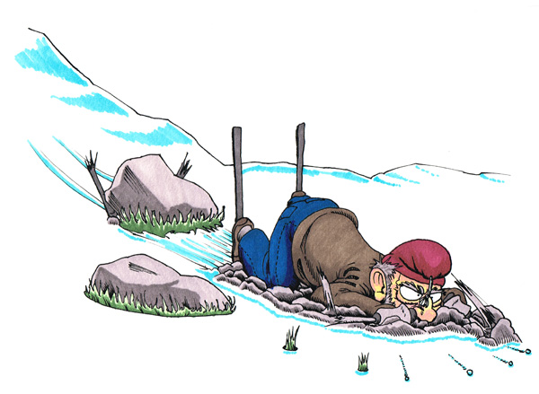

Mann i 70-åra fall ned ifrå hustaket sitt med snøfresaren

FOLLDAL (Dølingen)
Halvbred Bredal, opprinneleg ifrå Hurdal, fekk alt for høge turtal på snøfresaren sin då han skulle måke vekk snø i frå hustaket sitt.
I følge han sjølv hadde Syver Armobraaten lånt snøfresaren tidlegare, men han var ikkje klar over at snøfresaren hadde vorte modifisert.
-Snøfresaren må nok skrotas denne gongen, sa Halvbred, men han ser ikkje bort i frå at han kanskje kjøpar ein litt krafigare sak seinare.
Han takkar snøvêret for at det gjekk som det gjekk. Han landa oppå ein to meter høg snøhaug som han hadde måka tidlegare.
Fresaren landa derimot på nymåka asfalt, så dermed vert den ubrukeleg.
Korleis han kjem seg opp på taket med fresaren er ved hjelp av ein rampe som han har snekra sjølv. Fyrst går han sjølv oppå også trekkjer
han fresaren opp ved hjelp av eit trinsesystem som han har sett opp ved pipa.
No byrjar det å vårast!

HALLINGSKEID (Dølingen)
Lars Snekkersvea kan no melde om ukurante forhold i fjellet. Då han var på skitur i påska fekk han eit ublidt møte med ein stein.
Då han var på veg ned bakken såg han ikkji steinen fordi den var dekt med snø, men sør-sida av steinen var bar.
-Eg hadde nett kjøpt nye ski, så dette var ergeleg, seier han til Dølingen. No vil han åtvara andre som er på tur i fjella om at det kan vere stor variasjon i snødybde og at det er store partier der man ser graset stikkje opp.
-Så valdsamt vêrskifte har eg ikkje vore borti før, seier han og legg til at skia vert brukt til å fyre i peisen på hytta i kveld.
Fekk Kongens fortenestemedalje

HITTERDALEN (Dølingen)
Då medisinsk transport var vanskeleg i vinter, med mykje snø og fastsnøga brøytebilar, tok Olav Gabardinbrok saka i eigne hender.
Han tok like godt å skrudde ifrå kvarandre styret på sin Harley Davidson sykkel og bytta det ut med ein spark.
Det var også montert kjetting på bakhjulet for maksimal framdrift.
-Sidan det var så dårlig vêr i vinter så kjøyrde eg like godt skytteltrafikk mellom Hitterdalen og Røros, seier Gabardinbrok til Dølingen.
Lite visste han at folk fekk augane opp for arbeidet hans og sendte søknad til Statsforvaltaren.
Gabardinbrok takkar for tilliten og seier han berre gjorde plikta si som medmenneske.
Dølingen gratulerar.